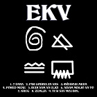

Nesto malo o ekv-u
Ekatarina Velika (skraćeno EKV) je bila rok grupa iz Beograda i jedna od najuspešnijih i najuticajnijih grupa na prostoru bivše Jugoslavije.Srž benda činili su gitarista i pevač Milan Mladenović , klavijaturistkinja Margita Stefanović i basista Bojan Pečar.
